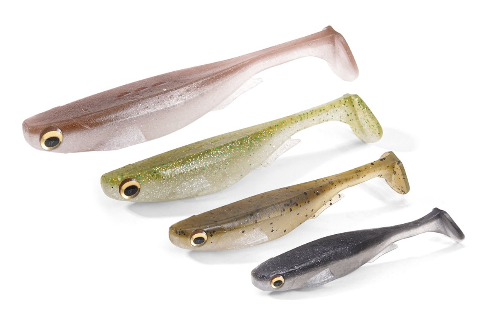
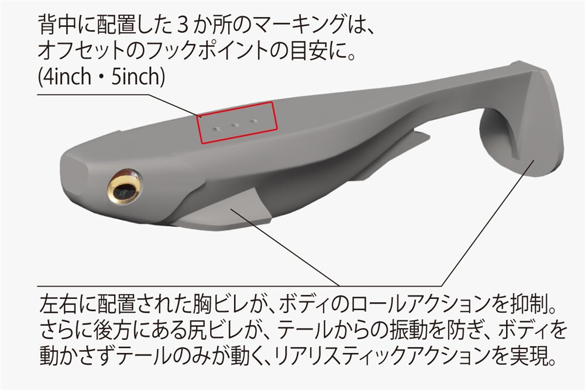
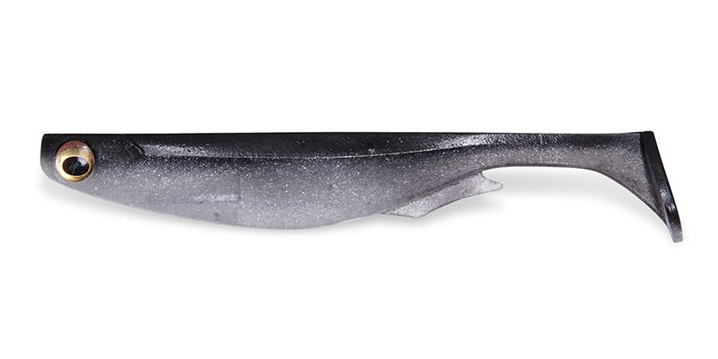
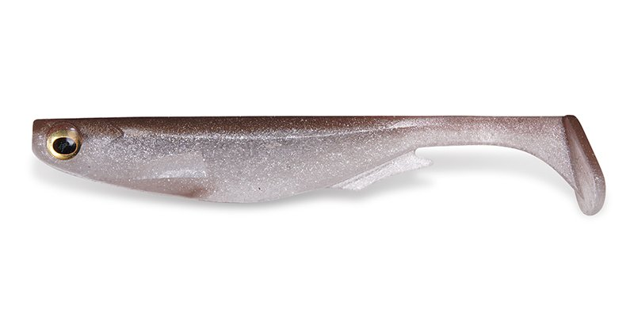
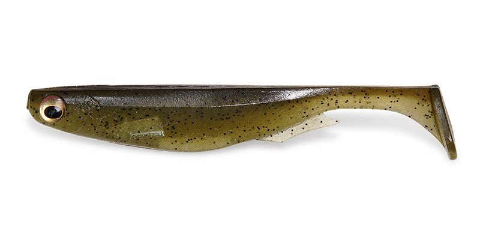
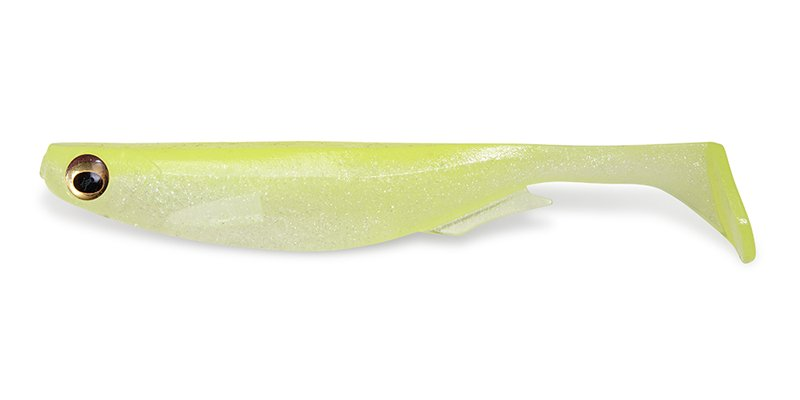
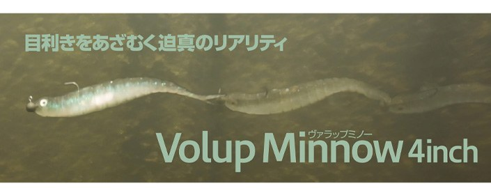

スパークシャッド
（SPARK SHAD）
スパークシャッドは、メガバスのシャッドテールワームです。キャッチコピーは「ナーバスなターゲットこそ、スパークだ。」。
ボートのハル（船体）のような底面と、極限まで薄くしたテールで、長い距離を巻いても姿勢が崩れず、テールだけが繊細に動き続けるのが最大の特徴。「繊細波動シャッドの決定版」です。

画像出典:メガバス公式HP
スペック
- メーカー
- Megabass（メガバス）
- タイプ
- シャッドテールワーム
- サイズ
- 3インチ／3.6インチ／4インチ／5インチ
- 入り数
- 6本（3インチ）／5本（3.6・4・5インチ）
- カラー
- 全10色
- ターゲット
- バス
- 価格
- 1,000〜1,350円（税別）
▼今すぐチェック


スパークシャッドの特徴
稀代の直進安定性。繊細波動シャッドの決定版
-
ボートのハルのような底面
底面をボートの船体のような形にして、ロングリトリーブでも高い直進安定性とレンジキープ力を出す。
-
テールだけが動くリアルな泳ぎ
胸ビレと平らな背中でボディのロールを抑え、尻ビレでテールの振動がボディに伝わるのを防ぐ。ボディは動かさずにテールだけが動く、ニュートラルなベイトのような泳ぎになる。
-
フックを刺しやすく、掛かりやすい
背中の3か所のマーキングがオフセットフックの目安（4・5インチ）。お腹のスリットでフックポイントが分かりやすく、バイトの瞬間にボディがつぶれてフッキング率が上がる。
スパークシャッドの使い方
基本は、ジグヘッドやオフセットフックのリグで、一定のスピードでゆっくりただ巻くことです。超スローでも薄いテールが微波動を出し続けるので、巻くスピードを上げすぎないのがコツです。
ジグヘッドは、同じメガバスのオカシラヘッドやオカシラ・スクリューヘッドと組み合わせると、姿勢よく泳がせられます。カバーまわりでは、オフセットフックのウィードレス仕様で使いましょう。

画像出典:メガバス公式HP
スパークシャッドの得意な状況
プレッシャーが高く、警戒心の強いバスが多いメジャーレイクや、ベイトを追っているのに食い切らない時に出番です。
ロールを抑えたナチュラルな泳ぎで、追ってきたバスにも違和感を与えにくいのが強み。フックポイントが回転しないので、追い食いのバイトもしっかり掛かり、よく釣れるシャッドワームです。
ワンポイント
バスが追ってくるのに食わない時は、巻くスピードはそのままに、レンジだけを一段下げて同じコースを通すと効果的です。直進安定性が高いので、カウントダウンでレンジを決めれば同じ層を長く引けます。
サイズの使い分け
| サイズ | 入り数 | 価格 |
こんな |
|---|---|---|---|
| 3インチ | 6本 | 1,000円 | 小さい |
| 3.6インチ | 5本 | 1,100円 | 3インチと |
| 4インチ | 5本 | 1,200円 | 基本の |
| 5インチ | 5本 | 1,350円 | 大きいベイトの |
スペックはメガバス公式HPの記載より。
人気カラー
スパークシャッドの人気カラーを紹介します。

シルバーシャッド小魚を食べている時の基本カラー。

ワカサギワカサギを食べている湖のバスに。

グリーンパンプキン濁りが少ない時や、ボトム付近で使う時に。

チャートパール濁りが強い時や、目立たせたい時に。
※全10色。
画像出典:メガバス公式HP
▼今すぐチェック
スパークシャッドに似ているルアー
-
 ベローズシャッド2.8
GEECRACK
詳細はこちら＞
ベローズシャッド2.8
GEECRACK
詳細はこちら＞
小さめのシャッドテールワーム。もっとフィネスに使いたい時に。
-
 レアリス リグルシャッド2.5
DUO
詳細はこちら＞
レアリス リグルシャッド2.5
DUO
詳細はこちら＞
小型のシャッドワーム。タフな時の食わせに。
-

ヴァラップミノー4.0インチ ボトムアップ 詳細はこちら＞魚の形をしたワーム。ミドストなどで比べたい時に。